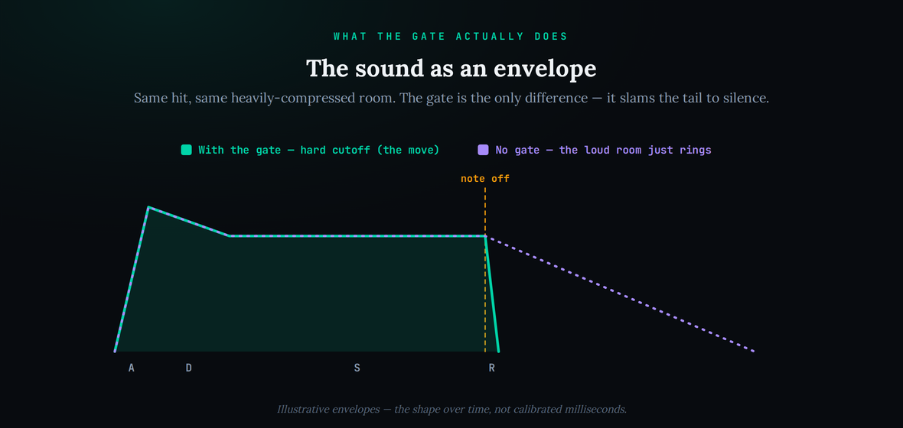
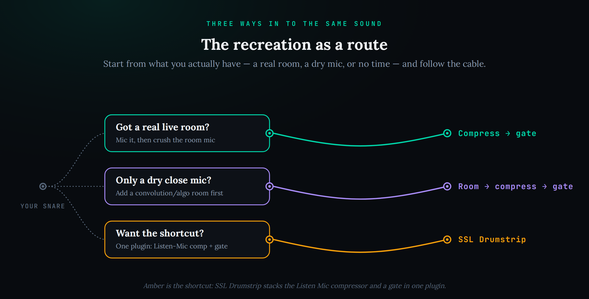
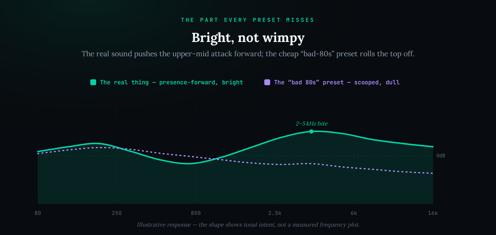

The “’80s gated snare” is one of the most requested sounds in a producer’s bag and one of the most misunderstood. Type it into a search bar and you get a hundred pages telling you to load a reverb, pick a preset called “NonLin,” and call it done — which produces the thin, cheesy “bad ’80s” snare, not the enormous, frightening crack you actually wanted. The real sound is not a reverb preset at all. It is heavily-compressed room ambience cut off hard by a noise gate — a recording-and-processing move, discovered by accident, that you can rebuild in any DAW once you understand what is actually happening. This guide separates what was genuinely used from what the internet keeps repeating, then walks the recreation from stock plugins first, with the one paid shortcut named only because it is real and buyable.
The gated snare is not a reverb preset — it is a drum in a live room, its room mic crushed with heavy compression, then chopped off by a fast, hard noise gate. To rebuild it in any DAW: take a solid snare, add a bright room (real or a convolution/algorithmic reverb), compress that room brutally, then put a gate after the compression with a fast attack and a short hold so the tail is slammed to silence. Arrange with no cymbals (they defeat the gate) and keep the top end bright (the real records push 2–5 kHz hard). The one-plugin shortcut is SSL’s Drumstrip, which bundles the Listen Mic compressor and a gate. And no — the original was not the AMS RMX16; that unit did not exist yet.
The sound was born on Peter Gabriel’s third solo album (“Melt,” 1980), on the track “Intruder,” with Phil Collins on drums playing no cymbals at Gabriel’s request, at Townhouse Studios in London. It came out of the SSL 4000 B console’s heavily-compressed reverse-talkback “Listen Mic,” whose signal was then cut by a noise gate — compressed room ambience slammed shut, not a reverb unit. Padgham has told this same story consistently for decades. Sources: Hugh Padgham interviews in MusicRadar and a 2005 Mix “Classic Tracks” piece; Sweetwater’s teardown; Wikipedia’s “Gated reverb” and “Intruder” entries.
That the sound is the AMS RMX16 reverb’s “NonLin 2” preset. The RMX16 was released in 1981 — after the 1979–80 “Intruder” sessions — so it could not have made the original. The NonLin preset was later voiced to emulate this sound. Collins muddied the water himself in a 1984 AMS advertorial claiming he used the RMX16 on “In the Air Tonight”, which contradicts his and Padgham’s technical accounts elsewhere (one plausible reconciliation: any AMS use was on the vocal, not the drums). Sources: RMX16 release date per Wikipedia / Sound on Sound; the 1984 advertorial contradiction documented by Vintage Digital.
The exact compression ratio, gate attack/hold/release times, and EQ moves are not published as numbers. The settings we give below are defensible starting estimates that reproduce the audible behaviour — heavy, fast room compression and a fast, hard gate — not transcriptions of the original session. Treat them as a place to start and tune by ear.
Why it isn’t a reverb preset
Start here, because the wrong mental model is the single reason most recreations fail. When people picture “gated reverb” they imagine a reverb plug-in with its tail chopped short, and there is a device called a gated-reverb preset that does exactly that. But the sound on the records that made this famous did not come from a reverb unit at all. It came from a microphone in a room, a compressor working far harder than you would ever normally push it, and a gate. Understanding that difference is the whole game: once you are trying to recreate compressed room ambience rather than a reverb effect, every setting that matters falls into place, and the settings that produce the cheesy version stop tempting you.
The mechanism, in one sentence, is this: put a drum in a live room, listen to it through a distant mic, compress that room signal so violently that the natural decay is dragged up into a loud, sustained wash, and then hang a noise gate across it so that the instant the drummer stops hitting, the entire wash is cut to silence. The compression is what makes it enormous; the gate is what makes it tight and controlled instead of a muddy roar. Neither one alone is the sound. It is specifically compress the room, then gate the room, in that order, and the order is not negotiable — gate first and you have nothing to compress; compress without gating and you have an uncontrollable smear.
It is worth understanding why heavy compression makes a room enormous, because once the mechanism is clear you will stop being timid with it. A compressor turns down whatever is louder than its threshold; when you then make up the lost level with output gain, everything below the threshold — the quiet decay of the room, the low-level reflections trailing off — gets pulled up with it. Push the threshold low and the ratio high, and the difference between the loud initial hit and the quiet tail collapses: the tail comes roaring up to nearly the level of the hit. That is upward compression in effect, and it is the entire reason a modest room turns into a wall of ambience. A normal mix compressor is set to be transparent; here you are deliberately abusing one to make the quiet parts loud. If it sounds tasteful, you have not gone far enough.
This is why a reverb preset called “gated” only ever gets you halfway. It gives you a reverb with a chopped tail, but it does not give you the brutal upward compression that turns a polite room into a wall, and it does not react to the performance the way a real gate on a real room does. You can absolutely fake the whole thing convincingly with plug-ins — that is what most of this guide is about — but you have to build the two halves deliberately, as compression plus gating, rather than reaching for a single effect that claims to do it all. The producers who nail it are the ones who stopped thinking “reverb” and started thinking “a crushed room with a gate on it.”
It is worth knowing the sound was never designed — it was stumbled into, which is why it feels like a happy accident even now. The microphone that started it was a communication device: the SSL console had a “Listen Mic,” a talkback mic hung in the live room so the engineer could hear the musicians speak, deliberately and heavily compressed so a quiet voice across the room came through clearly. Nobody meant to record drums through it. When Padgham had it open while Collins played, that savage communication compressor turned the kit into an explosion, and a noise gate already sitting in the signal path chopped the tail. The team recognised what they had, rerouted it so it could be recorded properly, and Gabriel wrote around it. The lesson buried in that story is the same one this whole guide turns on: the magic was the compression and the gate, applied to room sound, discovered on a mic that was never meant to make music. You are not chasing a preset; you are rebuilding a lucky chain of processing.
The five things that actually make the sound
Break the sound into its load-bearing parts and it stops being mysterious. There are five, and every one of them is a place a recreation goes wrong. Get all five and even stock plug-ins land it; miss any one and you get a recognisable-but-wrong imitation. Here they are in order of how badly people underdo them.
1. The source — a real drum and a real (or convincing) room. The effect is applied to ambience, so you need ambience to begin with. On the records that was a hard-hitting drummer in a bright, reflective live room, captured on distant mics. In your DAW that means either a genuine room recording, or a dry, punchy drum sample fed into a room — a convolution reverb loaded with a real room impulse, or a short, bright algorithmic room. The drum itself should be solid and full; the room should be bright and short, not a long, dark hall. If you start from a lifeless sample in no space at all, there is nothing for the compressor and gate to work on, and no amount of processing conjures a room that was never there.
2. Heavy compression on the room — the part everyone underdoes. This is the single most common failure, and it is a failure of nerve. The compression here is not the gentle 2–4 dB of gain reduction you would use to glue a mix. It is aggressive: a fast attack, a low threshold, and a high ratio, pushing the room mic so hard that the quiet decay of the room is dragged up to nearly the same level as the initial hit. Padgham has described the original talkback mic as savagely compressed by design — it was built to make a whisper across the room audible, which is exactly why it turned a drum kit into an explosion. The audible signature of doing this right is that the room does not fade away naturally; it swells and sustains, unnaturally loud, right up until something cuts it. If your recreation sounds polite, you have not compressed the room nearly hard enough. A dose of parallel compression is the safe way to reach for this much crush without losing the transient entirely.
Two details make the compression sound right rather than merely loud. The first is attack time: keep it reasonably fast, but not so instant that it clamps the initial transient flat — you want the crack of the hit to punch through before the compressor grabs the room behind it. The second is character. The original talkback compressor was a band-limited, coloured circuit, not a clean modern one, and that colour is part of the sound; if you are using a stock compressor, an aggressive FET-style model or anything with obvious character will get you closer than a pristine, transparent one. You are not trying to control dynamics politely here — you are trying to make the room detonate and take on a personality, so reach for a compressor that sounds like it is working hard, and let it.
3. The gate — the whole trick, and the timing is everything. Once the room is a loud, sustained wash, the gate is what sculpts it back into a weapon. Set across the compressed room signal, the gate opens the moment the drum is struck and slams shut a fraction of a second later, cutting the swollen tail dead. The parameters that matter are the gate’s attack (fast, so the transient punches through), its hold or duration (short — this sets how much of the big room you keep before the cutoff), and its release (fast, so the cutoff is abrupt rather than a fade). Longer hold gives you more of the huge room and a slower, more cinematic gate; shorter hold gives you the tight, clipped crack. There is no single “correct” time — it is a taste dial — but the character comes from the cutoff being hard. A soft, slow gate release just gives you back the reverb you were trying to escape.
There is a smarter way to run the gate that solves a lot of problems at once: key it from the dry drum, not from the compressed room. If the gate listens to the loud, sustained room to decide when to open and close, its timing gets vague, because the room never really goes quiet. Feed the gate a sidechain key from the clean, transient-rich dry snare instead, and it opens crisply on every hit and closes cleanly in the gaps — the same keyed-gate thinking behind a lot of sidechain work. That single routing choice is often the difference between a gate that stutters and chatters and one that snaps shut with authority. On a real kit it is also how you keep the gate reacting to the snare and not to a tom bleeding into the room mic.
4. The no-cymbals arrangement rule. This one is not a plug-in setting at all, and it is the reason the effect was discovered the way it was: Collins played without cymbals. It matters because a gate cannot tell a snare from a crash — it reacts to level, not to instrument. Cymbals ring continuously and wash across the whole kit, so a cymbal decaying under the snare keeps the gate held open, and the clean, dramatic cutoff you are working so hard for never happens. The gated sound and a busy cymbal pattern are mutually exclusive. If you want this effect on a real kit, you arrange around it: toms and snare carry the part, and cymbals are either removed entirely or gated and mixed on their own separate path so they do not sabotage the room gate. Ignoring this is why a beginner’s gated-drum bus sounds muddy instead of explosive.
5. The overlooked brightness. Here is the detail almost every recreation misses, and it is what separates the real, vivid sound from the dull “bad ’80s” caricature. Listen to the isolated drums on these records and the upper mids are pushed hard — the presence region around 2 to 5 kHz is noticeably forward, giving the hits a sharp, defined stick attack rather than a soft thud. People chasing the sound tend to make it big and dark and wonder why it lacks life; the real thing is big and bright. Whether that brightness came from the compressor’s own colouration, the room, or deliberate EQ almost does not matter for your purposes: the takeaway is to keep the top end forward. A modest presence lift, or simply not rolling off the highs, is the difference between a snare that cuts through a mix and one that disappears into mud.
What the gate actually does, seen as an envelope
It helps to picture the sound as a shape over time, because the gate’s job becomes obvious the moment you do. A natural room reverb rises with the hit and then decays away slowly, a long tail trailing off into the mix. The gated version starts the same way — hit, then the compressed room swelling up loud — but instead of trailing off, it is cut vertically to silence. That hard right-hand edge is the entire effect. Everything to the left of the cutoff is the compressed room; the cutoff itself is the gate.

Reading the shape tells you how to set the gate. The height of the body is set by how hard you compressed the room — taller means more crush. The position of the cutoff is your hold time — further right keeps more of the big room before the gate closes. And the steepness of the drop is your release — you want it near-vertical, not a gentle slope. When a recreation sounds wrong, this picture usually tells you which knob is at fault: a soft, sloping cutoff means your gate release is too slow; a body that is too quiet means your compression is too timid; a cutoff too far to the right means the hold is so long the gate barely does anything.
Recreate it: stock plugins first, then the shortcut
You do not need a single paid plug-in to build this, and doing it with stock tools first is the fastest way to actually understand it. Every DAW ships a reverb, a compressor, and a gate, and those three in the right order are the whole recipe. Here is the chain, with the settings that matter and, more importantly, why each one is set the way it is. Treat the numbers as starting points — the exact values are the inferred part — and tune by ear against a reference.
Start with your snare (or the whole cymbal-free kit) on a track. Send it to a room: your DAW’s convolution reverb with a real room impulse if you have one, or a short, bright algorithmic room — reverb time around a second or less, pre-delay near zero, and do not roll off the highs. This is the ambience the whole effect lives on, so make it present, not subtle. Our guide to using reverb in a mix covers choosing and shaping that room, and if you want a dedicated one, the best reverb plugins roundup points at the rooms worth owning.
A word on which kind of room to reach for, because it changes the result more than any other single choice. A convolution reverb loaded with an impulse of a real, bright, hard room is the most authentic option — it carries the actual reflection pattern of a physical space, which is exactly what the technique amplifies. A good algorithmic room is more flexible and often easier to dial, and it will absolutely get you a professional result; lean toward the brighter, denser room algorithms rather than a smooth hall. What you want to avoid is a long, dark, washy reverb — it has no early-reflection slap for the compressor to seize on, so it just turns to mud when you crush it. Short, bright, and dense is the target whichever engine you pick.
Now compress that room hard. Put a compressor on the room return (or on a bus carrying the room), fast attack, a low threshold, and a high ratio — you are aiming for a lot of gain reduction, far more than feels comfortable, until the room’s decay is dragged up loud and sustained. This is the step to be fearless on; if in doubt, push it further. Then place the gate after the compressor on that same room signal: fast attack so the transient survives, a short hold that keeps a satisfying chunk of the big room, and a fast release so the cutoff is abrupt. Trigger the gate off the drum hit and audition the hold time until the tail is slammed exactly where you want it; you can even automate the hold to open up on a big fill. Finally, add a touch of presence — a gentle lift around 3 kHz — so the result is bright and cutting rather than dull. That is the entire sound: room, crushed, gated, bright.
One balance decision separates a convincing result from a cartoon: you are usually blending the gated room underneath the dry drum, not replacing it. Keep the original, un-gated snare playing for its attack and definition, and mix the crushed, gated room in behind it as the size and drama — a parallel arrangement, the gated ambience on its own track or return, ridden up until the hit feels huge but still reads as a snare. Go too far and lean entirely on the gated room and you lose the sharp front of the transient; the dry drum is what keeps the sound articulate. How much room you blend in is the master control for how “’80s” the whole thing sounds: a little for a modern hit with weight, a lot for full-blown period drama.

If you would rather buy the shortcut, there is exactly one tool worth naming because it is confirmable and cheap: SSL’s Drumstrip. It bundles the same processors in one plug-in — a dedicated drum gate with independent open and close thresholds, and the “Listen Mic Compressor,” SSL’s own recreation of the exact talkback-mic circuit that made the original sound. It lists around $99 (and goes on sale for far less regularly), needs a free iLok account, and puts the crush-then-gate move a couple of clicks away instead of three plug-ins. It is a genuine shortcut, not a magic box: it does the same thing the stock chain does, faster, and with the actual circuit modelled. Use it if you like — but build it once with stock plug-ins first, because then you will know what every knob on the shortcut is doing.
Two closing notes on the recreation. First, keep the arrangement honest to the sound: solo drums, no cymbals ringing into the gate, and let the room be the drama. Second, this whole move is a cousin of a lot of everyday drum mixing and sidechain thinking — you are shaping a signal in time with dynamics, exactly as you do when you carve space for a kick. Once the gated room clicks, you will hear where else a crushed, gated ambience can make a boring drum enormous.
Beyond the snare: the same move on the whole kit
The reason this is worth learning as a principle and not a preset is that it works on far more than a snare. On the original records the most extreme examples were often the toms — the crushed, gated room turns a tom fill into a series of cannon shots, and the technique arguably sounds even bigger there than on the snare, because toms have more body for the compressor to inflate. Send your toms to the same crushed, gated room and you have an instant ’80s tom sound. The kick usually wants a lighter touch, or its own shorter room, so it stays tight rather than booming out of control.
Once you hear it that way, the door opens. A crushed, gated ambience can make a boring clap enormous, add menace to a percussion loop, or give a flat programmed beat the sense of being played hard in a real space. The controls are always the same three ideas — a bright room, brutal compression, a hard gate keyed off the transient — and only the source changes. That is the difference between having recreated one sound and having learned a move you can point at anything: the moment a dry, lifeless hit needs to feel huge and alive, you now know the chain that does it. The snare is just the most famous place this trick shows up, not the only one.
What you can’t buy — and where to stop chasing
Honesty is the point of this category, so here is the part no tutorial selling you a plug-in will tell you: some of the original sound is not for sale, and knowing that saves you from chasing it forever. You can recreate the technique perfectly — the crush, the gate, the brightness, the arrangement — and you can get astonishingly close. What you cannot buy is the specific physics that gave the records their last few percent.
You cannot buy the actual SSL 4000 B talkback circuit as it existed in that room in 1979 — you can buy a faithful model of it, which is close, but the original was a quirk of specific analogue hardware. You cannot buy the Townhouse Stone Room, the small, hard, hyper-reflective live room that gave the ambience its particular bright slap; that room is gone, converted to housing years ago, and every convolution impulse of it is a snapshot, not the room. And you cannot buy the performance — a drummer hitting genuinely hard, with intent, into that space. Those three things are the difference between “indistinguishable” and “very, very close,” and very close is a completely usable, professional result. Chase the technique to the end; do not lose a weekend trying to buy back 1979.
Do you need to clear anything?
No. Recreating the gated-reverb snare with your own drums, your own room, and stock or bought plug-ins is entirely your own production — there is nothing to clear and no rights question to worry about. You are rebuilding a technique, not sampling a record; the moment you play or program your own hit and process it, the result is yours. (The rights conversation only arrives if you were to sample the original recording itself — a different task, and not what this is.) Build it freely and use it in anything you like.
Build the skill: 3 drills
Run these in order. The first proves the effect is compression-plus-gate and nothing else; the second forces you to hear the timing; the third makes you confront what you cannot recreate, so your ear is honest.
- Put a punchy snare on a track and send it to a short, bright stock room reverb. Do not roll off the highs.
- Compress the room return hard — fast attack, low threshold, high ratio — until the tail swells up loud and sustained. Push it further than feels right.
- Add a gate after the compressor: fast attack, short hold, fast release. Audition the hold time until the tail is slammed. You have just built the ’80s snare with nothing but stock tools.
- Keep the chain from drill one. Set the gate hold as short as it goes and listen — a tight, clipped crack.
- Lengthen the hold in stages, listening each time, until the tail is long and cinematic. You are hearing the exact dial that separates one ’80s record from another.
- Now soften the gate release from fast to slow. Notice the moment it stops being “gated” and turns back into ordinary reverb — that hard cutoff is the whole effect.
- Pull up an isolated or well-known example of the real gated drum sound and your recreation side by side, matched in level.
- Write down exactly where yours falls short — usually brightness, the character of the room, or the weight of the hit. Fix the brightness first; it is the most common miss.
- Add a real room recording or a genuine room impulse in place of the algorithmic reverb and compare again. Note how much of the last gap was the room, not the processing — that is the part you cannot buy.
The brightness fingerprint, in one picture
Because the brightness is the detail people miss most, it is worth seeing. The real sound pushes the upper-mid attack forward — the presence region is lifted, giving the hits their sharp, defined edge. The cheap preset does the opposite: it rolls the top off and scoops the presence, which is exactly why it sounds small and dated instead of huge and alive. When your recreation sounds “bad ’80s” rather than “iconic ’80s,” this curve is almost always why.

It helps to know where that brightness came from, so you can add it honestly. Part of it is the room itself — a hard, reflective space is bright by nature. Part is the compressor, which pushes up the high-frequency detail of the room along with everything else. And part, on some records, is deliberate presence EQ. You do not need to reproduce the exact source; you need the result, which is a forward upper-mid. Add it with a broad boost around 3 kHz on the gated room, and if the boost brings up harsh sibilant hiss from the room noise, tuck a gentle de-esser after the EQ to tame just that band. The goal is a snare that reads as crisp and present in a busy mix, not one that only sounds big when soloed.
The fix is small and it is the last step of the recreation: a gentle presence lift, or simply not filtering the highs away, keeps the snare cutting through a mix. Do it after the gate, listen in the context of a full arrangement rather than soloed, and back off the moment it turns harsh. Bright and controlled, not bright and brittle.
The mistakes that make it sound wrong
Nearly every failed recreation is one of a handful of specific errors, and naming them turns troubleshooting from guesswork into a checklist. If yours is not landing, it is almost certainly one of these.
Too little compression is the number-one culprit — the room never becomes a wall, so the gate has nothing big to cut and the whole thing sounds polite. Push it much harder. Rolling off the top end is second: the sound goes dark and lifeless, the “bad ’80s” version, because you stripped the presence that makes it vivid. Keep it bright. A slow, soft gate release is third — it fades the tail instead of cutting it, which just hands you back the reverb you were trying to escape; make the cutoff hard. Cymbals or long ringing sources feeding the gate hold it open and murder the drama, so keep them off the gated path. And a long, dark reverb instead of a short, bright room turns to mush under compression — use a tight, reflective space. Run down that list and you will usually find the one knob standing between you and the sound.
Frequently Asked Questions
No — not for the original. The RMX16 was released in 1981, after the 1979–80 “Intruder” sessions where the sound was created, so it could not have made it. The famous drum sound came from the SSL console’s heavily-compressed talkback mic feeding a noise gate. The RMX16’s “NonLin” preset was later voiced to emulate the effect, and Collins himself added to the confusion in a 1984 AMS advertorial — but the technical accounts from Padgham are consistent that the original was console compression and gating, not a reverb unit.
Not quite, and thinking of it that way is why most recreations fall short. It is compressed room ambience cut by a gate. A reverb-with-a-short-tail preset gives you the chopped decay but not the brutal upward compression that makes the room enormous, and it does not react to the performance the way a gate on a real room does. Build it as heavy compression plus a gate, in that order, and it lands; reach for a single “gated reverb” preset and you get halfway.
The same way in every DAW, because they all ship the three tools you need. Send your snare to a short, bright room reverb; put a compressor on that room and drive it hard for a lot of gain reduction; then place a gate after the compressor with a fast attack, short hold, and fast release. Trigger the gate off the hit and tune the hold by ear. Add a small presence lift at the end. Nothing about the chain is DAW-specific — only the plug-in names change.
Because cymbals defeat the gate. A gate reacts to level, not to which drum is playing, so a ringing cymbal keeps it held open and destroys the clean cutoff that is the whole point. Collins playing cymbal-free at Gabriel’s request is exactly why the gate produced such a dramatic, sudden silence. If you want the effect on a full kit, remove the cymbals from the gated path or process them separately.
SSL’s Drumstrip is the honest pick, because it bundles a dedicated drum gate and the “Listen Mic Compressor” — SSL’s model of the actual talkback circuit that created the sound. It lists around $99 and is frequently on deep sale, and it needs a free iLok account. It is a shortcut, not a requirement: the stock-plugin chain gets you the same result. Build it stock first so you understand what the shortcut is doing.
Almost always one of two things: you did not compress the room nearly hard enough, so it never became huge, or you rolled off the top end and lost the brightness. The real sound is big and bright, with the 2–5 kHz attack pushed forward. Crush the room more, keep the highs, and add a gentle presence lift after the gate, and the “bad ’80s” version turns into the real one.
No, though a real room or a genuine room impulse gets you the last few percent. A convolution reverb loaded with a real room, or even a short, bright algorithmic room, gives the compressor and gate something to work on, which is all the technique needs. The room is the one part of the sound you cannot fully buy — the original Townhouse Stone Room is gone — but a good bright room gets you a professional, usable result.
No. If you played or programmed your own snare and processed it yourself, the result is entirely your own production — there is nothing to clear. Recreating a technique is not sampling a recording. A rights question would only arise if you sampled the original master itself, which is a different task and not what recreating the sound involves.